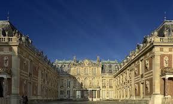

|
ÜLKELER
|
HAKKIMIZDA | İLETİŞİM | ||||
Eyfel Kulesi (Fransızca: La tour Eiffel [la tuʀ ɛˈfɛl]), Paris'teki demir kule. Kule, aynı zamanda tüm dünyada Fransa'nın sembolü halini almıştır. İsmini, inşa ettiren Fransız inşaat mühendisi Gustave Eiffel'den alır. En büyük turizm cazibelerinden biri olan Eyfel Kulesi, yılda 6 milyon turist çeker. 2002 yılında toplam ziyaretçi sayısı 200 milyona ulaşmıştır. Eyfel Kulesi 1887 ile 1889 yılları arasında Gustave Eiffel'in firması tarafından, Fransız Devrimi'nin 100. yıl kutlamaları çerçevesinde düzenlenen Expo 1889 Paris fuarının giriş kapısı olarak inşa edilmiştir. Aslında kulenin mimarı Gustave Eiffel değil, İsviçreli Maurice Koechlin'in siparişi üzerine tasarlayan Stephen Sauvestre'dir. Meslektaşı Emile Nouguier ile beraber ilk tasarımları yapmıştır. Kulenin, 7.739.401 Frank 31 Sent tutan inşaat masrafları, Gustave Eiffel'in tahminlerinin 1 milyon frank üstündedir.
1889 yılındaki açılış tarihinden önceki 5 ayda 1,9 milyon kişi ziyaret edince, yıl sonuna kadar toplam masrafın 3/4'ü çıkartılmıştır. 3.000 işçi 26 ay boyunca 18.038 adet demir parçayı 2,5 milyon perçinle bir araya getirdi. Hiç ölüm vakası yaşanmamış olması, o günün şartlarında şaşırtıcı bir durumdur. Ancak kule, onu bir utanç lekesi olarak gören Paris halkının tepkisini de çekmiştir. Bazı sanatçılar devasa bir sokak lambasına benzetirken, bir fabrika bacası gibi Paris'in görsel itibarını zedeleyeceğini ileri sürmüşlerdir. Böylelikle devrin sanatçı ve edebiyatçı çevresinde bir kampanya başlatılmış, bu kampanya süresince ünlü sanatçıların imzaladığı bildiriler dağıtılmıştır. Bugün ise Eyfel Kulesi, Dünya'nın en güzel mimari yapılarından biri olarak kabul edilir. Parisliler onu Demir Bayan olarak adlandırırlar. İlk başlarda Eiffel, Kule'ye sadece 20 yıl için müsaade almıştı. Dolayısıyla, 1909 yılında kulenin sökülmesi gerekiyordu. Ancak kule, iletişim için çok uygun yüksekliğe ulaştığından ve yeni yüzyılda Atlantik ötesi haberleşmeye imkân tanıdığından, kalmasına izin verildi. Bu bağlamda Eyfel Kulesi radyo yayıncılığının gelişmesinde önemli rol oynamıştır. Eyfel Kulesi, radyo dalgalarını çok uzun mesafelere yayabilmesi avantajıyla, l. Dünya Savaşı’nda sinyal kesici ve bozucu olarak da kullanılmıştır. Eyfel Kulesi, günümüzde Paris'in en çok ziyaret edilen noktası olsa da, en tepedeki 27 metrelik radyo vericisiyle halen bir verici istasyonu olarak kullanılmaktadır
Louvre Müzesi (Fransızca: Musée du Louvre), dünyanın en büyük sanat müzesidir. Fransa'nın başkenti Paris'te, Louvre Sarayı'na kurulmuştur. Şehrin içinden geçen Sen Nehri'nin kıyısında yer alır. Tarih öncesi çağlardan, 21. yüzyıla kadar uzanan, oldukça geniş bir koleksiyon yelpazesi vardır. Yaklaşık 35.000 kadar tarihî sanat eseri, 72.735 metrekarelik bir alanda sergilenmektedir.2017 yılında, 8,1 milyon ziyaretçi oranıyla dünyanın en çok ziyaret edilen sanat müzesi seçilmiştir
Sadece içeriğiyle değil, içine kurulmuş olduğu tarihî yapıyla da oldukça
önem taşıyan müzenin binası;
12. yüzyılın sonları ile 13. yüzyılın başları arasında dönemin kralı II. Philippe tarafından kale
olarak yaptırılmış fakat şehrin hızla gelişip kale sınırlarını aşması sonucunda yapı savunma
özelliğini kaybettiği için 1546 yılında I. François'nın emriyle Fransız krallarının resmî konutu
olarak kullanılması adına saraya çevrilmiştir.
Bugün müzenin bodrum katında hâlâ kalenin kalıntılarından izler görülebilir.[6] Defalarca genişletme
çalışmaları geçirdikten sonra nihayetinde 1682 yılında XIV. Louis'nin Versay Sarayı'na taşınma
kararı vermesiyle beraber Louvre,
aralarında Yunan ve Roma medeniyetlerinden kalma önemli eserlerin de bulunduğu kraliyet
koleksiyonunun sergilenmeye başladığı, müze olmayan ama aynı işlevi gören bir yer hâline
gelmiştir.Bu bağlamda yaklaşık 10 yıl kadar kullanıldıktan sonra 1692 yılında kraliyet adına
kurulmuş olan edebiyat ve heykeltıraşlık okulları buraya taşınmış ve 100 yıl boyunca burada eğitime
devam etmişlerdir.
Fransız Devrimi sırasında kurulan ulusal meclis, Louvre'un Fransız sanatının eserlerinin
sergilendiği bir müze olarak kullanılması gerekliliğine karar verdiği için tekrar müzeye
çevrilmiştir.
10 Ağustos 1793 tarihinde, 537 parçadan oluşan ve çoğu kraliyet
ailesi ile kiliseye ait olan bir resim koleksiyonu ile açılan müze, binanın bu amaca yönelik
inşa edilmemiş olmasından dolayı mimari açıdan sıkıntılar yaşamış ve 1796-1801 yılları
arasında kapalı kalmıştır.
Napolyon Bonapart devrinde içerik açısından iyice zenginleştirilen müze bir dönem Musée
Napoléon (Napolyon Müzesi) olarak da adlandırılmış fakat Fransız ordusunun işgal ettiği
yerlerden çekilmesi sonucunda yurt dışından etik olmayan yollarla kaçırılan bu eserler asıl
sahiplerine iade edilmiştir.
Yine de XVIII. Louis, X. Charles ve İkinci Fransız İmparatorluğu devirlerinde büyümesini
sürdüren müzenin koleksiyonuna 20.000 yeni eser ilave edilmiştir. Üçüncü Fransız Cumhuriyeti
döneminde de satın almalar ve yapılan bağışlar yoluyla içerik sayısı artış göstermiştir
Bugün müzenin sahip olduğu tüm sanat koleksiyonu sekiz ayrı başlığa göre ayrılmış durumdadır
ve bu düzene göre sergilenmeye devam etmektedir.

KVersay Sarayı ya da Versailles Sarayı, (Fransızca: Le château de Versailles) tarihi bir
Fransız şatosudur. Sarayın ilk binasının yapımına 1661'de başlanmıştır, daha sonra değişik
zamanlarda genişletilmiştir. Saray, günümüzde müze olarak kullanılır.
Versailles sarayı çok geniş planlanmış olması yönüyle tipik Fransızdır.
Roma İmparatorluğu'ndan sonra ilk kez bu sarayda büyük ölçüler kullanılmıştır. Bunun nedeni
ise zengin ve merkezi krallık yönetimiydi.
İtalya, Almanya ve İngiltere'de siyasi ortamlar farklı olduğu için Versailles sarayı gibi
saraylar uzun süre yapılamadı.
Sarayın ilginç bir özelliği olarak yapımında tuvalet veya banyo düşünülmemiştir. Bunun
nedeni o zamanki asillik anlayışında, asillerin istediği yerde gereksinimini
giderebileceğidir. Bu nedenle Avrupa'da yaygın olarak Versailles sarayının kokusunun
"Avrupa'daki tüm saraylardan eşsiz" (Memoirs: Duc de Saint-Simon) olduğu söylenirdi.
1768 yılına kadar da sarayda işleyen tuvalet yoktu. 1789 yılında Fransız Devrimi'nden sonra
tüm sarayda yalnızca 9 tane tuvalet vardı ve bunlar yalnızca kral ve yakın aile üyelerine
aitti. Sarayın geri kalan çalışanları lazımlık kullanırdı ve bu kokular daire ve genel
atmosfer ile çalışanların giysilerini tümüyle sarardı.
Yasaklanmış olmasına rağmen lazımlıklar genellikle çalışanlarca oda pencerelerinden dışarı
boşaltılırdı.
Versay Müzesi
Orsay Müzesi veya orijinal dilinde Musée d'Orsay, Fransa'nın başkenti Paris'te bulunan bir devlet
müzesidir.
Sen Nehri'nin sol yakasında bulunan müze eski bir tren garıydı. Bina 1898 - 1900 yılları arasında
inşa edildi.
Orsay Müzesi'nde çoğunlukla Fransız sanatına ait, 1848 - 1915 yıllarında arasında yaratılmış
heykeller, resimler, mobilyalar ve fotoğraflar bulunur.
Müze daha çok içlerinde Monet, Degas, Renoir, Cezanne gibi ressamların eserlerinin bulunduğu geniş
izlenimci koleksiyonu ile tanınır.
Bu koleksiyon, müzenin 1986 tarihindeki açılışına kadar Galerie nationale du Jeu de Paume'de
sergileniyordu.şarı boşaltılırdı.
Orsay Müzesi, Paris Uluslararası Sergisi için 1898 yılında inşa
edilen eski Orsay Garı'nın binasında kuruldu.
Açılışı, eski Fransız cumhurbaşkanı François Mitterrand tarafından, 1 Aralık 1986 tarihinde
gerçekleşti.
İnşaatı 1983 ile 1986 yılları arası Fransız mimarları Renaud Bardon, Pierre Colboc,
Jean-Paul Philippon tarafından gerçekleştirildi.
İtalyan mimar Gae Aulenti garı müzeye dönüştürmek için Fransız mimarlara yardımcı olmuştur.
6 Ekim 2007 tarihinde, Paris'te her sene gerçekleşen Nuit Blanche (Beyaz Gece) etkinliğinde,
Claude Monet'in Le Pont d'Argenteuil (Argenteuil'ün Köprüsü) adlı resmi,
müzeye giren kişiler tarafından 10 cm yırtılmıştır.
Verdon vadisi (Fransızca: Gorges du Verdon) ya da halk arasında bilinen adıyla Büyük
Verdon Kanyonu (Grand Canyon du Verdon),
Güney Fransa'da Alpes-de-Haute-Provence departmanında bulunan bir vadidir.
Castellane şehri yakınlarında başlayan vadi Moustiers-Sainte-Marie yakınlarındaki
baraj gölü Lac de Sainte-Croix'de sona erer.
Yaklaşık 21 km uzunluğunda ve 700 metre derinliğindeki vadi içerisinde berrak suyu
ile ünlü Verdon nehri akmaktadır.
Verdon vadisi, Tara vadisi ile birlikte Avrupa'nın en büyük kanyonu kabul
edilmektedir.
Verdon Kanyonu